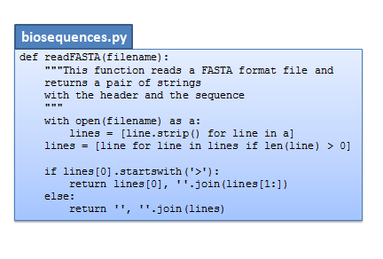

5. Funções e módulos#
5.1. Introdução#
No programa seguinte, dada uma sequência de uma cadeia de DNA pretende-se mostrar a sequência, a sequência complementar e o complemento reverso na forma de codões separados por um hífen.
Sendo óbvio o que é a sequência complementar, chamamos complemento reverso à sequência complementar mas mostrada no “sentido da transcrição”, isto é, a sequência complementar por ordem reversa. Isto porque, escrevendo a sequência bde uma cadeia no sentido 5’ -> 3’, faz sentido mostrar a outra cadeia também no sentido 5’ -> 3’, uma vez que esse é sempre o sentido da transcrição.
Este programa é realmente uma pequena extensão do que já foi visto anteriormente.
# sequência de uma cadeia (string)
seq = "AGCTGGATCCTGAACGCATAGACTAGCATGGGACTAAAGGTCCATTACTGA"
# dicionário de bases complementares
trans = {'A':'T', 'T':'A', 'C':'G', 'G':'C'}
# cálculo da sequência complementar, fazendo join
# a uma lista de bases complementares (o resultado é uma string)
comp = ''.join([trans[b] for b in seq])
# cálculo da complemento reverso, fazendo join da bases complementares
# por ordem reversa, obtida pela função reverse()
comp_rev = ''.join(reversed(comp))
# finalmente, mostrar as 3 sequências com os codões separados
# por - (e, já agora, mostrar 5' e 3')
seq_cods = [seq[i:i+3] for i in range(0, len(seq), 3)]
chain_seq = '-'.join(seq_cods)
print("5'-" + chain_seq +"-3'")
comp_cods = [comp[i:i+3] for i in range(0, len(comp), 3)]
chain_comp = '-'.join(comp_cods)
print("3'-" + chain_comp + "-5'")
comp_rev_cods = [comp_rev[i:i+3] for i in range(0, len(comp_rev), 3)]
chain_comp_rev = '-'.join(comp_rev_cods)
print('Complemento reverso')
print("5'-" + chain_comp_rev + "-3'")
5'-AGC-TGG-ATC-CTG-AAC-GCA-TAG-ACT-AGC-ATG-GGA-CTA-AAG-GTC-CAT-TAC-TGA-3'
3'-TCG-ACC-TAG-GAC-TTG-CGT-ATC-TGA-TCG-TAC-CCT-GAT-TTC-CAG-GTA-ATG-ACT-5'
Complemento reverso
5'-TCA-GTA-ATG-GAC-CTT-TAG-TCC-CAT-GCT-AGT-CTA-TGC-GTT-CAG-GAT-CCA-GCT-3'
A parte do programa nas linhas 17 e 18
seq_cods = [seq[i:i+3] for i in range(0, len(seq), 3)]
chain_seq = '-'.join(seq_cods)
repete-se de uma forma análoga para a sequência complementar e para o
complemento reverso nas linhas 21 e 22 e também nas linhas 25 e 26. O que
muda é a sequência sobre a qual estão a ser aplicadas (seq nas linhas 17 e 18,
comp nas linhas 21 e 22 e comp_rev nas linhas 25 e 26).
O objetivo de cada grupo destas duas linhas é muito claro: separar uma sequência (string) numa lista de codões e depois construír uma string juntando os codões mas separando-os por um hífen.
Mas temos de repetir 3 vezes, apenas mudando a sequência de partida?
E se houvesse uma função capaz de transformar uma string noutra string em que grupos de 3 letras eram separados por um hífen?
Não seria uma função de aplicação muito genérica, uma vez que só interessaria a programadores
que trabalham com sequências biológicas. No entanto, seria altamente conveniente se existisse uma função
chamada, por exemplo, seqcods(), que pudesse ser usada desta maneira:
# .....
# finalmente, mostrar as 3 sequências com os codões separados
# por - (e, já agora, mostrar 5' e 3')
chain_seq = seqcods(seq)
print("5'-" + chain_seq +"-3'")
chain_comp = seqcods(comp)
print("3'-" + chain_comp + "-5'")
chain_comp_rev = seqcods(comp_rev)
print('Complemento reverso')
print("5'-" + chain_comp_rev + "-3'")
5'-AGC-TGG-ATC-CTG-AAC-GCA-TAG-ACT-AGC-ATG-GGA-CTA-AAG-GTC-CAT-TAC-TGA-3'
3'-TCG-ACC-TAG-GAC-TTG-CGT-ATC-TGA-TCG-TAC-CCT-GAT-TTC-CAG-GTA-ATG-ACT-5'
Complemento reverso
5'-TCA-GTA-ATG-GAC-CTT-TAG-TCC-CAT-GCT-AGT-CTA-TGC-GTT-CAG-GAT-CCA-GCT-3'
Isto é, se esta função existisse, então ela seria aplicada a diferentes sequências mas a tarefa que ela iria realizar era sempre a mesma:
agrupar 3 letras consecutivas numa lista e
juntar estes grupos com um hífen.
5.2. Funções#
As funções (também conhecidas como subprogramas, subrotinas, isto é, mini-programas dentro de programas) são a solução para estes casos.
Python e muitas outras linguagens permitem a definição de novas funções pelo programador, aumentando livremente o arsenal de funções disponíveis na construção de programas.
Desde há muitas décadas que esta prática é encorajada: tarefas específicas e bem determinadas devem ser escritas na forma de funções.
As funções funcionam como unidades lógicas dentro de um programa que
se podem usar com diferentes argumentos em diferentes partes do programa, eliminando repetição.
se podem combinar com outras funções aumentando a flexibilidade lógica da construção de programas.
Anteriormente já vimos várias funções em ação. Usámos funções que:
estão sempre disponíveis e fazem parte integrante da linguagem
ficam acessíveis por importação de um módulo
estão associadas a objetos e usam-se da forma
objeto.função().
a = 'Uma pequena string'
# len() e int() são funções sempre disponíveis
n = len(a)
f = int(4.2)
# A função .count() está associada a strings e listas
nA = a.count('A')
# A função append() está associada a listas e modifica a lista
a = []
a.append(33)
# a função log (logaritmo base e) está disponível após
# importar o módulo math
import math
l = math.log(2.0)
5.3. Definição de funções (def)#
As criação (ou definição) de novas funções é feita com o comando
def.
Uma função típica é sob o ponto de vista lógico, em tudo análoga ao conceito matemático de função.
Como primeiro exemplo para ilustrar a definição de funções, vamos supor que estaríamos interessados em clacular a seguinte expressão em vários pontos de um programa:
\(x^2 - 3 x\)
Poderíamos definir uma função para realizar esse cálculo da seguinte forma:
def f(x):
res = x**2 - 3 * x
return res
Depois desta definição, a função f fica disponível e, quando aplicada a um um argumento x concreto, dá como resultado aquela expressão. Pode ser usada várias vezes.
y = f(10.2)
print(y)
print(1, '→', f(1))
print(0, '→', f(0))
print(2, '→', f(2))
73.44
1 → -2
0 → 0
2 → -2
Podemos traçar a função numa “tabela”
def f(x):
return x**2 - 3 * x
# 10 pontos entre -3 e 3
abcissas = [-3.0 + 6.0 * i / 10 for i in range(11)]
# usando a função f
ordenadas = [f(x) for x in abcissas]
for x, y in zip(abcissas, ordenadas):
print(f'{x:5.2f} → {y:5.2f}')
-3.00 → 18.00
-2.40 → 12.96
-1.80 → 8.64
-1.20 → 5.04
-0.60 → 2.16
0.00 → 0.00
0.60 → -1.44
1.20 → -2.16
1.80 → -2.16
2.40 → -1.44
3.00 → 0.00
Ou mesmo usar a função para traçar o seu gráfico, aplicando-a a muitos pontos próximos uns dos outros para ser quase contínua:
def f(x):
return x**3 - 3 * x
abcissas = [-3.0 + 6.0 * i / 1000 for i in range(1001)]
ordenadas = [f(x) for x in abcissas]
from matplotlib import pyplot as plt
plt.plot(abcissas, ordenadas, '-', c='navy')
plt.grid()
plt.show()
vejamos mais ao pormenor em que consiste a definição de uma função.
Vamos supor que a função seqcods() foi criada.
Tal como na matemática, as funções transformam objetos noutros objetos:

Mas, tal como na matemática, as funções são escritas para atuar sobre
objetos genéricos (x):
Vejamos, finalmente, como criar a função seqcods():
def seqcods(x):
cods = [x[i:i+3] for i in range(0,len(x),3)]
comhifen = '-'.join(cods)
return comhifen
5.4. Anatomia de uma função#
Qauis são os vários elementos que compões esta definição?

Após o comando def segue-se o nome da função. Este nome deve seguir as mesmas
regras que os nomes de objetos da linguagem Python. Por exemplo, não podem começar por
um número, não podem ter espaços e .
Ainda na mesma linha segue-se uma indicação dos argumentos da função entre (). Podem ser zero, um
ou vários argumentos. Mas, muito importante
Importante
Os nomes usados nesta lista de argumentos são genéricos, tal como no conceito matemático de função. Não são nenhuma referência a objetos concretos existentes no programa.
Mas, quando a função for usada, estes nomes irão ser substituídos por valores concretos, como iremos ver a seguir.
Segue-se a definição daquilo que a função executa quando for chamada, a tarefa da função propriamente dita. Esta função pode atuar sobre os seus argumentos, executando comandos arbitrariamente complicados. A liberdade em relação ao que podemos incluír numa função é quase total. Atribuições de nome, comandos for, comandos if...else, outras funções, são exemplos do que pode ser incluído
na definição de uma função.
Finalmente, uma linha da definição da função contem o comando return. O papel
deste comando é simples: assinala o resultado da função.
Qualquer expressão, por mais complicada que seja, à frente do comando return é
o resultado da função.
Tipicamente, o comando return é a última linha da definição da função. Mas é perfeitamente
possível escrever funções que, testando condições com if podem executar returns “prematuros”
em linhas que não são a última. Podem haver vários comandos return numa definição da função.
Claro, à semelhança do que se passa com for, if...else, with, é o alinhamento interior das
linhas que indica onde começa e acaba a definição de uma função. No exemplo acima, as linhas
cods = [x[i:i+3] for i in range(0,len(x),3)]
comhifen = '-'.join(cods)
return comhifen
estão alinhadas “mais dentro”, usando alguns espaços (convencionou-se 4 espaços). Havendo, por exemplo,
um comando for, teríamos de alinhar algumas linhas ainda mais “para dentro”.
Mas, para que serve a definição de uma função nova?
A definição de uma função (def) não executa nada imediatamente.
É necessário chamar (ou “invocar”) a função para esta ser usada:
def seqcods(x):
cods = [x[i:i+3] for i in range(0,len(x),3)]
comhifen = '-'.join(cods)
return comhifen
a = "ATGGTTACCTAGTATTTAGGATTA"
print(a)
# A função é chamada aqui:
s = seqcods(a)
print(s)
ATGGTTACCTAGTATTTAGGATTA
ATG-GTT-ACC-TAG-TAT-TTA-GGA-TTA
Chamar uma função é simples: escrevemos o nome da função, seguida do valôr/objeto/expressão ao qual queremos aplicar a função entre ().
Havendo um resultado, é muito comum atribuír um nome ao resultado:
s = seqcods(seq)
Nota
O comando return pode “devolver” uma expressão complicada
(não só o nome de um objeto)
Poderíamos condensar toda a tarefa da função seqcods() numa expressão à frente do comando return.
Uma outra versão seria:
def seqcods(x):
return '-'.join( [x[i:i+3] for i in range(0,len(x),3)])
a = "ATGGTTACCTAGTATTTAGGATTA"
print(a)
# A função é chamada aqui:
s = seqcods(a)
print(s)
ATGGTTACCTAGTATTTAGGATTA
ATG-GTT-ACC-TAG-TAT-TTA-GGA-TTA
Em resumo:
A linha
def seqcods(x):
“regista” uma nova função, chamada seqcods, que pode ser usada em
qualquer ponto do programa, da forma seguinte:
s = seqcods(a)
Na realidade há uma regra:
Nota
O uso de uma função só pode figurar no texto de um programa após
o programa “passar” pelo comando def durante a sua execução.
A funções tendem a ser criadas qause no início de um programa. Mas a prática corrente é incluí-las em módulos que possam ser importados pelo programa, como iremos ver a seguir.
5.5. Entrada e saída de valores#
Qaundo invocamos uma função para ela ser executada, ela atua sobre valores
concretos, geralmente com um nome, e ela produz um resultado concreto, ao qual
podemos atribuír um nome. Esta figura ilustra o mecanismo de passagem de valores
“para dentro” e “para fora” da função, usando outra vez a função seqcods() como exemplo:

Vejamos mais um exemplo de uma função, que agora contem um comando for.
A função para calcular fatoriais já existe em módulos que podemos importar, mas se a tivessemos de definir, seria algo como:
Exemplo: função factorial():
def factorial(n):
res = 1
for k in range(2,n+1):
res = res * k
return res
print(factorial(200))
788657867364790503552363213932185062295135977687173263294742533244359449963403342920304284011984623904177212138919638830257642790242637105061926624952829931113462857270763317237396988943922445621451664240254033291864131227428294853277524242407573903240321257405579568660226031904170324062351700858796178922222789623703897374720000000000000000000000000000000000000000000000000
5.6. Vários tipos de funções#
As funções podem ser “atípicas” quanto ao número de argumentos e resultados.
Vejamos a variedade possível, usando funções já conhecidas:
a = 'Uma pequena string'
# 1 argumento, 1 resultado
print( len(a) )
# 1 arg, 1 res, associada a um objeto (string a)
print( a.count('a') )
# 0 arg, 1 res, associada a um objeto (string a)
print( a.upper() )
18
2
UMA PEQUENA STRING
# 1 arg, 0 res, associada a um objeto (lista b)
# modifica o objeto (a lista b)
b = [12, 24]
print( b.append(36) )
print(b)
None
[12, 24, 36]
Portanto, podemos perfeitamente ter funções sem argumentos. Neste caso a função
é invocada com () vazios.
Por outro lado, uma função pode não produzir nenhum resultado. Ela executa uma tarefa e modifica
um objeto , mas não existe nenhum resultado formal. Estas funções não têm um comando return.
O caso mais paradigmático é a função append(): ela acrescenta um objeto ao fim de uma lista mas
não produz um resultado concreto ao qual se pode dar um nome.
Além da função .append(), recordar que as listas têm outras duas
funções deste tipo, que modificam a lista sem produzir nenhum resultado
(o resultado é a constante None): .reverse() e .sort().
b = [12, 24, 36]
print(b)
b.reverse()
print(b)
b.sort()
print(b)
[12, 24, 36]
[36, 24, 12]
[12, 24, 36]
As funções podem ter mais de um argumento (ou zero ou um). O número pode até ser variável, havendo argumentos que são opcionais.
É o caso da função log(), que, pode ter um segundo argumento opcional que
indica a base do logaritmo. Se não existir, a base é o número e.
Mas também o resultado de uma função pode ser mais complicado do que apenas um número ou uma string: as funções podem devolver uma lista inteira, um dicionário ou outros objetos mais complexos.
Tudo depende do que estiver à frente do comando return.
Por exemplo, a função localtime()do módulo time produz um
objeto composto e vários elementos (que são necessários para definir um instante no tempo):
import math
print( math.log(64, 2) )
import time
x = time.localtime(time.time())
print(x)
6.0
time.struct_time(tm_year=2023, tm_mon=5, tm_mday=1, tm_hour=21, tm_min=38, tm_sec=18, tm_wday=0, tm_yday=121, tm_isdst=1)
Vejamos como podemos escrever funções simples para executar algumas tarefas já vistas anteriormente.
Problema
Eliminar valores de uma lista que pertençam a uma outra “lista negra”
Escrevemos a função aceitando 2 argumentos: a lista a “limpar” e a lista “negra”.
Na função usamos uma lista em compreensão com if como vimos num capítulo anterior:
def elimin_black(uma_lista, black_list):
res = [i for i in uma_lista if i not in black_list]
return res
a = [1, 2, 4, 'um', 'dois', 3, 42, 'quatro']
black = [1, 2, 'um', 'dois']
clean = elimin_black(a, black)
print(a)
print ('\nA eliminar:', black)
print(clean)
[1, 2, 4, 'um', 'dois', 3, 42, 'quatro']
A eliminar: [1, 2, 'um', 'dois']
[4, 3, 42, 'quatro']
Problema
Dado um nome de um ficheiro de texto, escrever uma função para
ler o conteúdo do ficheiro, separar as linhas para uma lista, sem o
\n no final, e excluir as linhas vazias.
from pathlib import Path
def ler_fich(nome):
tudo = Path(nome).read_text()
linhas = []
for linha in tudo.splitlines(): # o \n é retirado por splitlines()
if len(linha) > 0: # só ficam as que não estão vazias
linhas.append(linha)
return linhas
linhas = ler_fich('gre3.txt')
for linha in linhas:
print(linha)
>sp|P38715|GRE3_YEAST NADPH-dependent aldose reductase GRE3 OS=Saccharomyces cerevisiae (strain ATCC 204508 / S288c) GN=GRE3 PE=1 SV=1
MSSLVTLNNGLKMPLVGLGCWKIDKKVCANQIYEAIKLGYRLFDGACDYGNEKEVGEGIR
KAISEGLVSRKDIFVVSKLWNNFHHPDHVKLALKKTLSDMGLDYLDLYYIHFPIAFKYVP
FEEKYPPGFYTGADDEKKGHITEAHVPIIDTYRALEECVDEGLIKSIGVSNFQGSLIQDL
LRGCRIKPVALQIEHHPYLTQEHLVEFCKLHDIQVVAYSSFGPQSFIEMDLQLAKTTPTL
FENDVIKKVSQNHPGSTTSQVLLRWATQRGIAVIPKSSKKERLLGNLEIEKKFTLTEQEL
KDISALNANIRFNDPWTWLDGKFPTFA
Outra versão, usando listas em compreensão:
def ler_fich(nome):
return [linha for linha in Path(nome).read_text().splitlines() if len(linha) > 0]
linhas = ler_fich('gre3.txt')
for linha in linhas:
print(linha)
>sp|P38715|GRE3_YEAST NADPH-dependent aldose reductase GRE3 OS=Saccharomyces cerevisiae (strain ATCC 204508 / S288c) GN=GRE3 PE=1 SV=1
MSSLVTLNNGLKMPLVGLGCWKIDKKVCANQIYEAIKLGYRLFDGACDYGNEKEVGEGIR
KAISEGLVSRKDIFVVSKLWNNFHHPDHVKLALKKTLSDMGLDYLDLYYIHFPIAFKYVP
FEEKYPPGFYTGADDEKKGHITEAHVPIIDTYRALEECVDEGLIKSIGVSNFQGSLIQDL
LRGCRIKPVALQIEHHPYLTQEHLVEFCKLHDIQVVAYSSFGPQSFIEMDLQLAKTTPTL
FENDVIKKVSQNHPGSTTSQVLLRWATQRGIAVIPKSSKKERLLGNLEIEKKFTLTEQEL
KDISALNANIRFNDPWTWLDGKFPTFA
Problema
Eliminar valores repetidos numa lista (criando uma lista nova)
def elimin_reps(uma_lista):
res = []
for i in uma_lista:
if i not in res: # o append() só é feito se ainda não existir
res.append(i)
return res
uma_lista = [1, 2, 4, 7, 7, 5, 8, 8, 9, 10]
print(uma_lista)
clean = elimin_reps(uma_lista)
print(clean)
[1, 2, 4, 7, 7, 5, 8, 8, 9, 10]
[1, 2, 4, 7, 5, 8, 9, 10]
Se as funções tiverem resultados é possível usá-las em composição de funções:
def elimin_reps(uma_lista):
res = []
for i in uma_lista:
if i not in res:
res.append(i)
return res
def elimin_black(uma_lista, black_list):
return [i for i in uma_lista if i not in black_list]
a = [1, 2, 4, 'um', 'dois', 3, 3, 37, 42, 42, 'quatro']
black = [1, 2, 'um', 'dois']
clean = elimin_reps(elimin_black(a, black))
print(clean)
[4, 3, 37, 42, 'quatro']
5.7. Âmbito dos nomes#
Vejamos um exemplo de uma função que mostra os seus argumentos com print():
def recta(m, b, x):
print('Para x =', x)
print('com m =', m)
print('com b =', b)
g1 = m * x
g0 = b
return(g1 + g0)
# 3 atribuições de nome numa única linha
x, m, b = 2.0, 3.0, 2.0
res = recta(m, b, x)
print('Resultado:', res)
Para x = 2.0
com m = 3.0
com b = 2.0
Resultado: 8.0
Este programa corre sem problemas.
Vejamos agora um exemplo com print()fora da função
em que até procuramos mostrar os valores de g1e g0:
def recta(m, b, x):
g1 = m * x
g0 = b
return(g1 + g0)
m, b, x = 2.0, 3.0, 2.0
res = recta(m, b, x)
print('Para x =', x, 'm =', m, 'b =', b)
print('m*x =', g1, 'b =', g0)
print('Resultado:', res)
Para x = 2.0 m = 2.0 b = 3.0
---------------------------------------------------------------------------
NameError Traceback (most recent call last)
Cell In[24], line 11
8 res = recta(m, b, x)
10 print('Para x =', x, 'm =', m, 'b =', b)
---> 11 print('m*x =', g1, 'b =', g0)
12 print('Resultado:', res)
NameError: name 'g1' is not defined
O que se passou aqui? O programa dá um erro na linha
print('m*x =', g1, 'b =', g0)
Os nomes usados dentro da função g1 e g0 são locais à função:
pertencem ao âmbito da função e só são válidos duarnte a execução da
função.
A linha print('m*x =', g1, 'b =', g0) está “fora” da função e procura usar um nome, g1 que
está dentro do âmbito da função.
Qualquer parte do programa “exterior” à função não consegue “ver” os nomes do âmbito local da função. Daí o erro durante a execução.
O mesmo acontece aos próprios nomes locais dos argumentos da função:
def recta(m, b, x):
g1 = m * x
g0 = b
return(g1 + g0)
# agora dando nomes diferentes fora da função:
p, q, r = 2.0, 3.0, 2.0
res = recta(q, r, p)
print('Para x =', x, 'm =', m, 'b =', b)
print('Resultado:', res)
Para x = 2.0 m = 2.0 b = 3.0
Resultado: 8.0
Para tornar bem claro que os nomes dentro da função podem ter valores diferentes dos nomes fora da função:
def recta(m, b, x):
print('Dentro da função --------')
print('m =', m, 'b =', b, 'x =', x)
print('-------------------------')
x = m * x + b
return x
m = 2
b = 2
x = 4
# usando a função com expressões...
res = recta(m + 3, b + 3, x * x)
print('Fora da função -----')
print('m =', m, 'b =', b, 'x =', x)
print('\nResultado:', res)
Dentro da função --------
m = 5 b = 5 x = 16
-------------------------
Fora da função -----
m = 2 b = 2 x = 4
Resultado: 85
Este programa corre sem problemas!
Mas cada um dos nomes m, b, x é usado em dois contextos e tem
valores diferentes:
O contexto local, quando estão “dentro” da função.
O contexto global, quando estão “fora da função”.
Fora da função, os valores globais são:
m = 2
b = 2
x = 4
Estes valores não são modificados fora da função e são apresentados pela
função print() no final.
Dentro da função estes nomes são, em primeiro lugar, usados como os argumentos da função.
Pela maneira como a função é chamada, estes valores são:
m = 5
b = 5
x = 16
O nome x é modificado dentro da função (x = m * x + b) ficando com o
valor final 85 e é este valor que é o resultado da função (return x).
Quando a função termina e estamos de novo “de fora” da função, o valor
de x volta a ser 4, uma vez que voltamos a um contexto “global”.
5.8. Argumentos opcionais#
Na lista de argumentos da função podemos usar argumentos opcionais (ou do tipo palavra-chave, em inglês keywork arguments)
Para isso, na lista de argumentos, indicamos os nomes desses argumentos com um valôr atribuído (com =)
O efeito dessa atribuição é triplo:
Um argumento com uma atribuição fica marcado como opcional, isto é, pode ser omitido.
Se esse argumento for omitido, o seu valôr é automaticamente aquele que está atribuído na definição da função
Quando a função é usada podemos-nos referir a esse argumento na forma de uma atribuição, usando o seu nome.
O melhor é mostrar uma função com dois argumentos, a e b que são opcionais por terem valores
atribuídos na definição da função. No interior da função, print() mostra quais são
os valores que os argumentos têm cada vez que a função é usada.
A função é usada de várias maneiras diferentes e torna-se óbvio que os parâmetros são opcionais e qual o papel dos valores atribuídos.
def mix(a=1, b=0):
c = a + b
print('a =', a, 'b =', b, '--> return =', c)
return c
x = mix() # omitindo os dois argumentos
x = mix(b=3) # omitindo a, dando valôr a b
x = mix(a=2, b=3) # dando valôr a e b
x = mix(2,3) # dando valôr aos dois sem usar os nomes
a = 1 b = 0 --> return = 1
a = 1 b = 3 --> return = 4
a = 2 b = 3 --> return = 5
a = 2 b = 3 --> return = 5
Os argumentos opcionais têm muito interesse e são muito usados.
De entre muitas aplicações, eles podem ser usados em funções que podem funcionar de uma maneira direta e simples, calculando o seu resultado ou de uma forma em que são apresentados os cálculos intermédios envolvidos no cálculo.
No seguinte exemplo, o argumento opcional trace controla,
com False ou True se a função fatorial é “silenciosa” ou se mostra
a evolução do cálculo do fatorial.
Usnado primeiro a função com o argumento trace omitido, isto é, igual a False:
def factorial(n, trace=False):
p = 1
for i in range(2,n+1):
p = p * i
if trace:
print(i, p)
return p
f20 = factorial(20) # argumento omitido
print('O factorial de 20 é', f20)
O factorial de 20 é 2432902008176640000
Agora usando com trace=True:
def factorial(n, trace=False):
p = 1
for i in range(2,n+1):
p = p * i
if trace:
print(i, p)
return p
f20 = factorial(20, trace=True) # trace = True
print('O factorial de 20 é', f20)
2 2
3 6
4 24
5 120
6 720
7 5040
8 40320
9 362880
10 3628800
11 39916800
12 479001600
13 6227020800
14 87178291200
15 1307674368000
16 20922789888000
17 355687428096000
18 6402373705728000
19 121645100408832000
20 2432902008176640000
O factorial de 20 é 2432902008176640000
5.9. Módulos e import#
Como vimos, muitas funções estão imediatamente disponíveis quando começamos a escrever um programa.
Estas funções podem ser “livres” (por exemplo a função len()) ou
associadas a objetos (por exemplo, s.split() que está associada à
string s).
A linguagem Python permite a organização dos programas em módulos.
Módulos são ficheiros .py que contêm
coleções de funções úteis e relacionadas entre si, podendo também conter
alguns outros objetos que não são funções, mas que contêm informação de
suporte.
Um programador pode e deve organizar um projeto grande em vários módulos, muitos dos quais são coleções de funções reunidas num único ficheiro.
Estas funções ficam disponíveis pelo mecanismo de importação, como veremos.
Os módulos são também essenciais no aumento da funcionalidade da própria linguagem Python: com a distribuição oficial do Python e em algumas distribuições de “Python científico” são tipicamente disponibilizados centenas de módulos, em que cada módulo reúne a funcionalidade adicional relacionada com um propósito particular.
Por exemplo, o módulo math reúne funções associadas a cálculos
matemáticos (e as constantes \(\pi\) e e, que não são funções).
O módulo time reúne funções e constantes relacionadas com a utilização
da data e hora.
A documentação sobre a coleção de módulos que são são disponibilizados em todas as distribuições da linguagem Python (a chamada Biblioteca padrão (em inglês Standard Library) pode ser encontrada na documentação oficial. São centenas.
Por outro lado, quem escreve módulos novos pode submetê-los ao Python Package Index, conhecido como PyPi. Trata-se de um imenso depósito de módulos com contribuições de milhares de autores e em permanente crescimento.
5.10. Exemplo da construção de um módulo#
Vamos supor que é útil ter uma função que lê ficheiros com
um sequência no formato FASTA e desdobra o conteúdo no cabeçalho (header)
e na sequência, na forma de duas strings.
def readFASTA(filename):
"""This function reads a FASTA format file and
returns a pair of strings with the header and the sequence
"""
with open(filename) as a:
lines = a.read().splitlines()
# remove empty lines
lines = [line for line in lines if len(line) > 0]
# split header and sequence
# the header may be absent
if lines[0].startswith('>'):
return lines[0], ''.join(lines[1:])
else:
return '', ''.join(lines)
h, s = readFASTA("gre3.txt")
print(f'Header:\n{h}')
print(f'\nSequence:\n{s}')
Header:
>sp|P38715|GRE3_YEAST NADPH-dependent aldose reductase GRE3 OS=Saccharomyces cerevisiae (strain ATCC 204508 / S288c) GN=GRE3 PE=1 SV=1
Sequence:
MSSLVTLNNGLKMPLVGLGCWKIDKKVCANQIYEAIKLGYRLFDGACDYGNEKEVGEGIRKAISEGLVSRKDIFVVSKLWNNFHHPDHVKLALKKTLSDMGLDYLDLYYIHFPIAFKYVPFEEKYPPGFYTGADDEKKGHITEAHVPIIDTYRALEECVDEGLIKSIGVSNFQGSLIQDLLRGCRIKPVALQIEHHPYLTQEHLVEFCKLHDIQVVAYSSFGPQSFIEMDLQLAKTTPTLFENDVIKKVSQNHPGSTTSQVLLRWATQRGIAVIPKSSKKERLLGNLEIEKKFTLTEQELKDISALNANIRFNDPWTWLDGKFPTFA
Uma pequena explicação sobre dois pormenores:
a função tem como resultado um par de valores (as duas strings). Isso é conseguido pelo facto de o comando
returnter à sua frente dois valores separados por,.Aquela string que aparece logo após a linha
defe que ocupa duas linhas (daí as""") tem uma descrição do que a função faz (está em inglês, mas é uma string, pode estar em qualquer língua). O nome dessa string especial é “string de documentação”, mas é universalmente conhecida como docstring.
Vamos supor que esta função readFASTA() seria a primeira de uma coleção de funções
relacionadas com o processamento de ficheiros de texto contendo
sequências usados em bioinformática (uma sequência em FASTA é apenas
um exemplo).
Podemos criar um ficheiro biosequences.py contendo essa função:

Este ficheiro constitui um módulo que pode ser usado num programa.
Supondo que este módulo está disponível na mesma pasta em que estou a criar um
programa .py novo, como usar a função readFASTA() que se encontra no módulo?
Através do comando import:
import biosequences
h, s = biosequences.readFASTA("gre3.txt")
print(f'Header:\n{h}')
print(f'\nSequence:\n{s}')
Header:
>sp|P38715|GRE3_YEAST NADPH-dependent aldose reductase GRE3 OS=Saccharomyces cerevisiae (strain ATCC 204508 / S288c) GN=GRE3 PE=1 SV=1
Sequence:
MSSLVTLNNGLKMPLVGLGCWKIDKKVCANQIYEAIKLGYRLFDGACDYGNEKEVGEGIRKAISEGLVSRKDIFVVSKLWNNFHHPDHVKLALKKTLSDMGLDYLDLYYIHFPIAFKYVPFEEKYPPGFYTGADDEKKGHITEAHVPIIDTYRALEECVDEGLIKSIGVSNFQGSLIQDLLRGCRIKPVALQIEHHPYLTQEHLVEFCKLHDIQVVAYSSFGPQSFIEMDLQLAKTTPTLFENDVIKKVSQNHPGSTTSQVLLRWATQRGIAVIPKSSKKERLLGNLEIEKKFTLTEQELKDISALNANIRFNDPWTWLDGKFPTFA
Há outras duas maneiras de utilizar o comando import.
A primeira é indicar apenas as funções que estamos interessados em utilizar.
Neste caso, depois do import a função
fica disponível como readFASTA() e não é necessário usar biosequences.readFASTA():
from biosequences import readFASTA
h, s = readFASTA("gre3.txt")
print(f'Header:\n{h}\n\nSequence:\n{s}')
Header:
>sp|P38715|GRE3_YEAST NADPH-dependent aldose reductase GRE3 OS=Saccharomyces cerevisiae (strain ATCC 204508 / S288c) GN=GRE3 PE=1 SV=1
Sequence:
MSSLVTLNNGLKMPLVGLGCWKIDKKVCANQIYEAIKLGYRLFDGACDYGNEKEVGEGIRKAISEGLVSRKDIFVVSKLWNNFHHPDHVKLALKKTLSDMGLDYLDLYYIHFPIAFKYVPFEEKYPPGFYTGADDEKKGHITEAHVPIIDTYRALEECVDEGLIKSIGVSNFQGSLIQDLLRGCRIKPVALQIEHHPYLTQEHLVEFCKLHDIQVVAYSSFGPQSFIEMDLQLAKTTPTLFENDVIKKVSQNHPGSTTSQVLLRWATQRGIAVIPKSSKKERLLGNLEIEKKFTLTEQELKDISALNANIRFNDPWTWLDGKFPTFA
A outra maneira é fazer uma importação em tudo semelhante à anterior
mas indicando com * que queremos importar todas as funções e outros objetos
do módulo:
from biosequences import *
h, s = readFASTA("gre3.txt")
print(f'Header:\n{h}\n\nSequence:\n{s}')
Header:
>sp|P38715|GRE3_YEAST NADPH-dependent aldose reductase GRE3 OS=Saccharomyces cerevisiae (strain ATCC 204508 / S288c) GN=GRE3 PE=1 SV=1
Sequence:
MSSLVTLNNGLKMPLVGLGCWKIDKKVCANQIYEAIKLGYRLFDGACDYGNEKEVGEGIRKAISEGLVSRKDIFVVSKLWNNFHHPDHVKLALKKTLSDMGLDYLDLYYIHFPIAFKYVPFEEKYPPGFYTGADDEKKGHITEAHVPIIDTYRALEECVDEGLIKSIGVSNFQGSLIQDLLRGCRIKPVALQIEHHPYLTQEHLVEFCKLHDIQVVAYSSFGPQSFIEMDLQLAKTTPTLFENDVIKKVSQNHPGSTTSQVLLRWATQRGIAVIPKSSKKERLLGNLEIEKKFTLTEQELKDISALNANIRFNDPWTWLDGKFPTFA
Esta última maneira é desaconselhada: um módulo pode conter centenas de funções e, por isso, podem ser importados centenas de novos nomes para um programa, que podem entrar em conflito com outros nomes iguais utilizados no programa.
Um módulo pode conter outros objetos para além de funções.
A pensar em algumas operações que poderiam ser realizadas com sequências biológicas, o ficheiro biosequences.py poderia ser ampliado com as seguintes atribuições:
# .....
basesDNA = 'ATGC'
basesRNA = 'AUGC'
aa_residues = "ACDEFGHIKLMNPQRSTVWY"
complement = { 'A':'T', 'T':'A', 'G':'C', 'C':'G'}
complementRNA = { 'A':'U', 'U':'A', 'G':'C', 'C':'G'}
gencode = {
'TTT': 'F', 'TTC': 'F', 'TTA': 'L', 'TTG': 'L', 'TCT': 'S',
'TCC': 'S', 'TCA': 'S', 'TCG': 'S', 'TAT': 'Y', 'TAC': 'Y',
'TGT': 'C', 'TGC': 'C', 'TGG': 'W', 'CTT': 'L', 'CTC': 'L',
'CTA': 'L', 'CTG': 'L', 'CCT': 'P', 'CCC': 'P', 'CCA': 'P',
'CCG': 'P', 'CAT': 'H', 'CAC': 'H', 'CAA': 'Q', 'CAG': 'Q',
'CGT': 'R', 'CGC': 'R', 'CGA': 'R', 'CGG': 'R', 'ATT': 'I',
'ATC': 'I', 'ATA': 'I', 'ATG': 'M', 'ACT': 'T', 'ACC': 'T',
'ACA': 'T', 'ACG': 'T', 'AAT': 'N', 'AAC': 'N', 'AAA': 'K',
'AAG': 'K', 'AGT': 'S', 'AGC': 'S', 'AGA': 'R', 'AGG': 'R',
'GTT': 'V', 'GTC': 'V', 'GTA': 'V', 'GTG': 'V', 'GCT': 'A',
'GCC': 'A', 'GCA': 'A', 'GCG': 'A', 'GAT': 'D', 'GAC': 'D',
'GAA': 'E', 'GAG': 'E', 'GGT': 'G', 'GGC': 'G', 'GGA': 'G',
'GGG': 'G', 'TAA': 'STOP', 'TAG': 'STOP', 'TGA': 'STOP'}
E ficaríamos com algumas strings e dicionários úteis que poderíamos usar no contexto da construção de um programa de processa sequências de macromoléculas biológicas.
Uma pequena aplicação do código genético (no dicionário genecode):
Problema
Criar (e experimentar para ver se está bem) uma função que traduz uma sequência de uma cadeia de DNA para a sequência da proteína correspondente
Sabemos que o módulo biosequences tem um dicionário chamado gencode.
from biosequences import gencode
def translation(seq):
# create a list with codons
cods = [seq[i:i+3] for i in range(0, len(seq), 3)]
# translate codons
prot = []
for c in cods:
# translate codon c using dict
aa = gencode[c]
if aa == 'STOP': # if the aminoacid is STOP then break the for loop
break
prot.append(aa)
return ''.join(prot)
# Sequência de teste
seq = 'AGCTGGATCCTGAACGATGCATAAGCATAGCCATAGACTAGCATGGGACTAAAGGTCCATTACTGA'
print(seq)
print(translation(seq))
AGCTGGATCCTGAACGATGCATAAGCATAGCCATAGACTAGCATGGGACTAAAGGTCCATTACTGA
SWILNDA
Claro que a função translation() seria uma boa adição ao nosso módulo
biosequences…
O projeto BioPython foi precisamente criado como uma coleção de funções e objetos que suportam a representação e transformação de sequências biológicas. Hoje é muito mais do que isso, mas a parte central deste pacote de módulos continua a ser a funcionalidade relacionada com sequências biológicas.
Finalmente, se usarmos a primeira forma do comando import (import biosequences), é possível mudar o nome do módulo (para uma forma mais abreviada), um alias, da seguinte forma:
import biosequences as bs
h, s = bs.readFASTA("gre3.txt")
print(f'Header:\n{h}\n\nSequence:\n{s}')
Header:
>sp|P38715|GRE3_YEAST NADPH-dependent aldose reductase GRE3 OS=Saccharomyces cerevisiae (strain ATCC 204508 / S288c) GN=GRE3 PE=1 SV=1
Sequence:
MSSLVTLNNGLKMPLVGLGCWKIDKKVCANQIYEAIKLGYRLFDGACDYGNEKEVGEGIRKAISEGLVSRKDIFVVSKLWNNFHHPDHVKLALKKTLSDMGLDYLDLYYIHFPIAFKYVPFEEKYPPGFYTGADDEKKGHITEAHVPIIDTYRALEECVDEGLIKSIGVSNFQGSLIQDLLRGCRIKPVALQIEHHPYLTQEHLVEFCKLHDIQVVAYSSFGPQSFIEMDLQLAKTTPTLFENDVIKKVSQNHPGSTTSQVLLRWATQRGIAVIPKSSKKERLLGNLEIEKKFTLTEQELKDISALNANIRFNDPWTWLDGKFPTFA